Сергей Владимирович Мусенко |
« назад |
Участие в проектах Мобильного Интернета |
|
* На данной странице перечислены только крупные и законченные проекты.
|
|
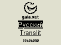
2001 - 2003 гг.
| |
Сайт wap.gala.net
Мобильный портал компании Gala.Net.
Содержит:
- более 10 разделов новостей;
- курсы валют и валютный калькулятор;
- страницы знакомств и объявлений;
- wap-почта;
- wap-чат;
- службы бронирования авиа и ж/д билетов (закрыты весной 2003 г);
- психологические тесты;
- анекдоты;
- заказ поздравления в эфире GalaRadio;
- хит-парад Galaradio "Пашина двадцатка";
- телепрограмма футбол на TV;
- генератор логотипов (для абонентов UMC);
- справочники телефонных номеров, автомобильные коды, штрихкоды и т.д.;
- счетчик посещений.
Наполнение всех новостных разделов берется из баз данных web-сайтов проекта Gala.Net
Весь сайт можно просмотреть не только на мобильном телефоне или эмуляторе, но и любым браузером (wap.gala.net/index.php).
Посещаемость сайта в августе 2003 -- более 90000 хитов в день. За неполных 3 года счетчик посещений показывает цифру более 21 миллиона!
Авторский проект.
Реализация: PHP, Perl, Python, SQL Sybase.
|
|
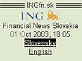
Cентябрь 2002 г.
| |
Сайт wap.ingfn.sk
WAP-сайт банка ING Slovakia (словацкая и английская версии).
Очень подробный сайт, практически полная версия web-сайта www.ingfn.sk, включая
графики изменения значений различных банковских показателей.
Особенность сайта в его полиморфности: он одинаково информативен при просмотре его
на различных мобильных устройствах (телефонах, PDA), изменяя размеры
изображений и используя цветной или черно-белый экран в зависимости
от устройства.
Он так же работает при просмотре его любым web-браузером.
Содержит страницу новостей, информацию о текущих банковских показателях,
описание предоставляемых услуг и информацию о банке,
форму голосования "вопрос недели", форму для вопросов и пожеланий пользователей.
Авторский проект.
Реализация: PHP, PHP GL, SQL Sybase.
|
|
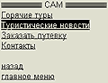
май 2002 г.
| |
Сайт компании SAM umc.gala.net/sam/
WAP-сайт туристической компании "САМ", г. Киев.
Выполнен как часть сайта wap.umc.ua. Содержит страницу "горящих туров",
страницу новостей, форму заказа туристической путевки а так же страницу контактной информации.
Авторский проект.
Реализация: PHP, SQL Sybase.
|
|
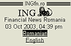
2001 - 2002 гг.
| |
Сайт wap.ingfn.ro
WAP-сайт банка ING Romania (румынская и английская версии).
Содержит страницу новостей, информацию о текущих банковских показателях,
описание предоставляемых услуг и информацию о банке,
форму голосования "вопрос недели", форму для вопросов и пожеланий пользователей.
Авторский проект.
Реализация: PHP, SQL Sybase.
|
|
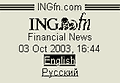
2001 - 2002 гг.
| |
Сайт wap.ingfn.com.ua
WAP-сайт банка ING Ukraine (русская и английская версии).
Содержит информацию о текущих банковских показателях, описание предоставляемых услуг, информацию о банке, контактную информацию.
Авторский проект.
Реализация: PHP, SQL Sybase.
|
|
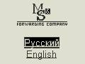
ноябрь 2001 г.
| |
Сайт компании M&S wap.m-and-s-ua.com
WAP-сайт транспортной компании "M&S", г. Киев.
Содержит описание компании, предоставляемых услуг, страницу новостей и
форму заказа услуги.
Авторский проект.
Реализация: PHP, SQL Sybase.
|
|
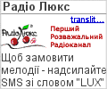
Октябрь 2005 г.
| |
Акция "LUX" совместно с Радио Люкс FM
SMS проект для абонентов UMC и КиевСтар - заказ мелодий, звучащих в эфире
радиостанции Люкс FM.
Ежедневное обновление плей-листа; выбор абонентами одной из пяти последних
композиций, звучавших в эфире; выбор формата файла из 9 вариантов
(от RTTTL до MP3); сбор статистики и отчетов для компаний - правообладателей;
админ-интерфейс для управления медиа-контентом.
Проект сделан по заказу MobEye.biz
Реализация: PHP, Python, SQL Sybase.
|
|
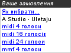
Июль 2005 г.
| |
Акция "20 коктейлей" (мультимедийный контент)
SMS проект для абонентов UMC и КиевСтар. Абоненты, отправляя 1 SMS, получали
возможность заказать один из 20 наборов, состоящих из одной полифонической
мелодии (6 вариантов форматов) и двух цветных заставок (изображение в 4х
вариантах).
Проект сделан по заказу MobEye.biz
Реализация: PHP, Python, SQL Sybase.
|
|
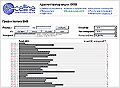
Май 2004 г.
| |
Акция совместно с телеканалом M1 "Золотая жар-птица"
SMS проект для абонентов UMC и КиевСтар, состоящий из двух частей:
- Скрипт поддержки диалога с пользователями по SMS;
- Админ-интерфейс для получения статистики и ввода текстов.
Телезрители имели возможность проголосовать за понравившийся им видео клип, транслируемый по телеканалу.
Администрация телеканала регулярно получала статистику голосований для определения победителей конкурса.
Реализация: PHP, Python, SQL Sybase.
|
|
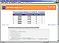
Октябрь 2003 г.
| |
Акция для оператора мобильной связи ДЖИНС "Узнай мелодию"
WAP проект из двух частей:
- Пользовательский интерфейс -- опрос и учет правильных ответов.
- Админ-интерфейс "Виртуальный лототрон", моделирующий розыгрыш лотерейных билетов (участник розыгрыша получает лотерейные билеты по числу правильных ответов).
Пользователи получали мелодии, состоящие из 5 нот, после чего выбирали правильное название из предложенных вариантов.
Осуществлена поддержка различных моделей телефонов (Nokia, Siemens, а так же телефонов с функцией EMS).
Авторский проект.
Реализация: PHP, SQL Sybase.
|
|
Декабрь 2002 г.
| |
Новогодняя акция 2002 года "Викторина UMC"
WAP проект из двух частей:
- Пользовательский интерфейс -- опрос и учет правильных ответов.
- Админ-интерфейс "Виртуальный лототрон", моделирующий розыгрыш лотерейных билетов (участник розыгрыша получает лотерейные билеты по числу правильных ответов).
Пользователи выбирали правильные варианты ответов на вопросы. Каждый правильный ответ учитывался в розыгрыше призов.
Авторский проект.
Реализация: PHP, SQL Sybase.
|
|
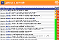
Декабрь 2002 г.
| |
Новогодняя акция 2002 года "Допиши поздравление"
WAP проект из двух частей:
- Программа, принимающая сообщения пользователей.
- Админ-интерфейс модератора акции для отбора лучших текстов, которые после этого становятся доступными для просмотра пользователям.
Жюри компании UMC по завершении акции премировало лучших авторов.
Авторский проект.
Реализация: PHP, SQL Sybase.
|
|